Mother's Day crafts made by kids carry a weight that a store-bought gift rarely matches, no matter how imperfect the glue job or how chaotic the glitter situation gets along the way. The effort itself is the gift, and a mom tends to remember that far longer than whatever actually gets unwrapped.
Most of these ideas use supplies that are probably already sitting around the house somewhere, paint, paper, a mason jar, a few beads, and scale easily across ages, from a toddler's handprint to a teenager's handwritten memory jar.

20 Adorable Mother's Day Crafts for Kids
1. Handmade Mother's Day Video Message
Not every Mother's Day gift needs glue, paint, or paper.
Recording a short video of kids sharing a favorite memory, something they appreciate about their mom, or simply saying thank you, then editing the clips together into one short message, makes for a genuinely moving gift.
It's one of the simplest ideas on this list in terms of supplies, and often one of the most emotional once it's actually watched.
2. Homemade Sugar Scrub Gift
Teens can put together a simple sugar scrub using sugar, a carrier oil like coconut or olive oil, and a few drops of essential oil for scent.
Mixing everything together and spooning it into a jar with a handwritten label, something like "Mom's Spa Day," finishes the gift.
It reads as a genuinely luxurious gift without costing much at all to actually put together.
3. DIY Memory Jar With Shared Moments
This takes a different angle than a love-notes jar, instead of compliments, it's filled with specific shared memories between a child and their mom.
Older kids can write out longer reflections, while younger kids can simply draw a picture of a memory instead.
The focus on shared experience rather than general praise tends to make this version feel a little more personal and specific.
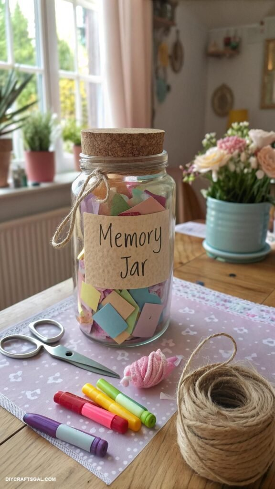
4. Mother's Day Breakfast Tray Craft
Decorating a simple tray or placemat with drawings and a short message turns an ordinary breakfast into something a bit more memorable.
Pairing it with breakfast in bed makes even a simple plate of toast and eggs feel like a genuine occasion.
What actually makes this one land isn't the food itself, it's the visible effort behind getting it there in the first place.
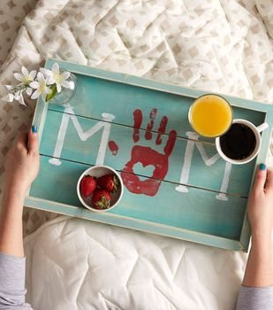
5. DIY Scented Candle Gift
Older kids can help make a simple candle using melted wax, a wick, and a small jar, pouring the wax, carefully placing the wick, then letting it cool is the whole process.
A straightforward scent like lavender works well without requiring anything complicated, and labeling it something like "Mom's Calm Time" ties the whole gift together.
It feels like a higher-effort gift than it actually is to make, which is exactly the kind of trade-off that works well for this occasion.
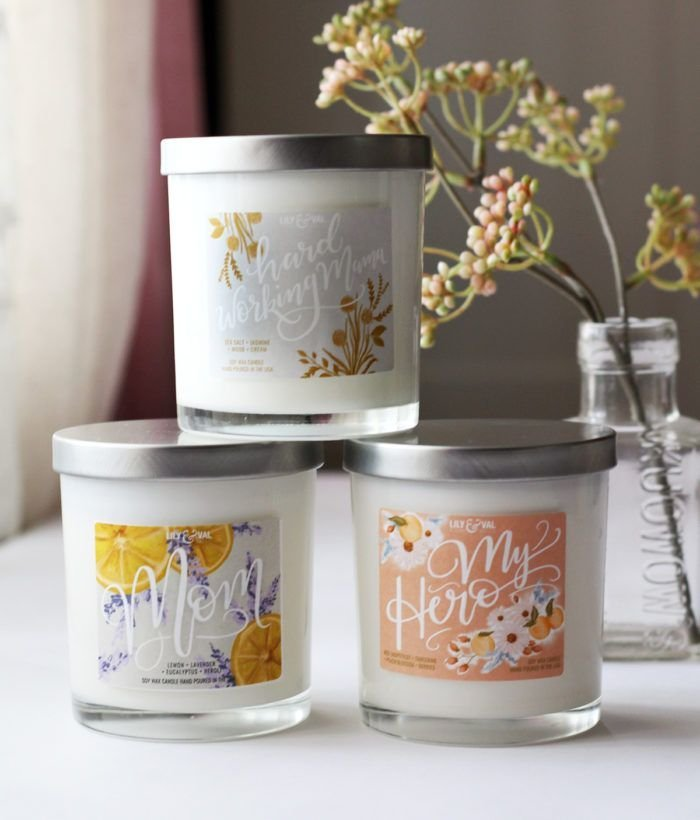
6. Painted Tote Bag Craft
A reusable tote bag makes a surprisingly good canvas, and fabric paint turns it into something genuinely wearable afterward.
Kids can paint a pattern, a message, or a simple design directly onto the fabric, and the craft suits elementary-age kids and teens especially well since it reads as modern rather than babyish.
It's also one of the few crafts on this list that gets practical daily use afterward, for groceries, books, or everyday errands, with an easy story behind it every time someone asks.
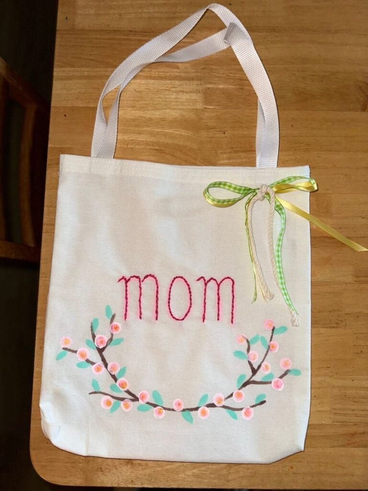
7. Homemade Bath Salt Gift
Older kids and teens can mix a simple bath salt blend, Epsom salt, a few drops of essential oil, maybe some dried flower petals, and pour it into a labeled jar.
Calling it something like "Relax Mom" gives the gift a clear purpose the moment it's opened.
It reads as a more grown-up, considered gift than most of the other crafts here, and it comes with the added bonus of actually encouraging Mom to take a break.
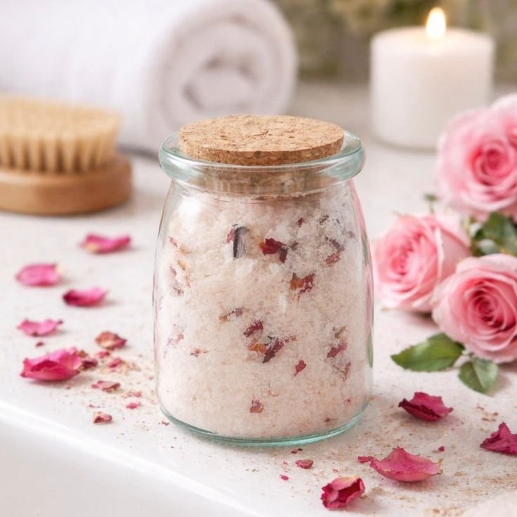
8. DIY "All About My Mom" Printable Sheet
This one reliably produces the funniest results of the whole list.
A printable sheet with simple prompts, Mom's favorite food, how old she is, what she's good at, lets a child answer in their own completely unfiltered words.
The answers are rarely accurate, which is exactly the point; these sheets tend to become the kind of keepsake that gets pulled out and laughed over for years afterward.
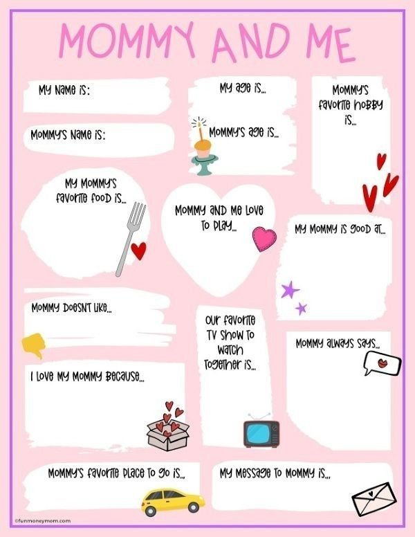
9. DIY Memory Scrapbook
Older kids can put together a mini scrapbook filled with photos, short written memories, and a few small mementos from time spent together.
Encouraging honesty over polish tends to produce the most meaningful pages, what a kid actually remembers and feels matters more than how neatly it's laid out.
Years later, a scrapbook like this tends to mean even more than it did on the day it was given.
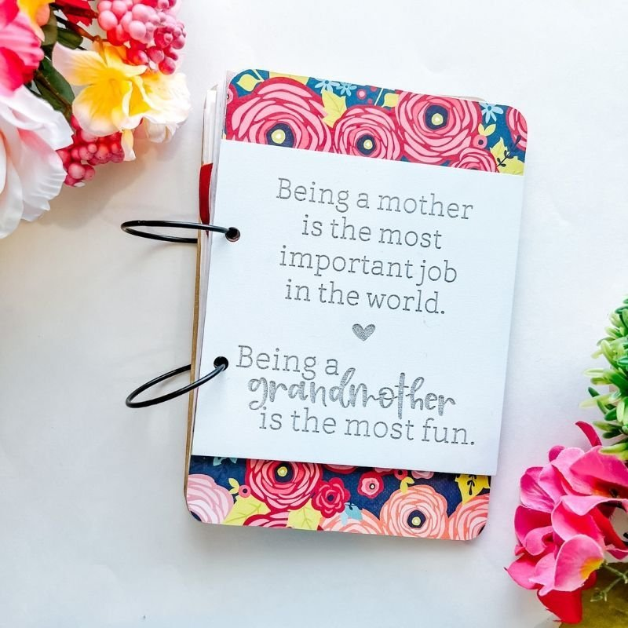
10. Mother's Day Flower Pot Craft
A small terracotta pot, decorated with paint and markers, turns into a meaningful planter once a message is added to the outside.
Planting a flower or a small herb inside gives the gift an ongoing purpose rather than a one-day lifespan.
The growth itself carries a bit of symbolism that suits the occasion particularly well, a gift that keeps developing well past the day it was given.
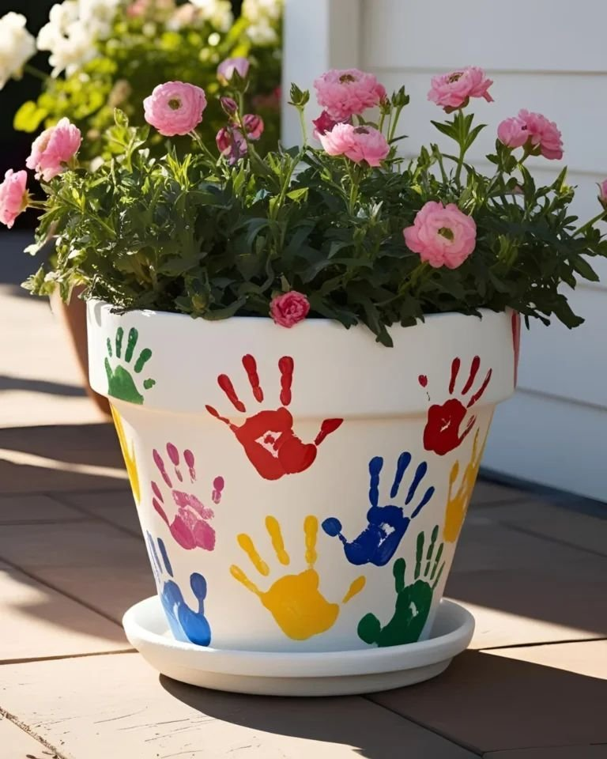
11. DIY Mother's Day Card
A simple card becomes something genuinely meaningful once a kid writes their own words inside it instead of a generic store-bought message.
A few open-ended prompts, what makes Mom special, a favorite memory together, something she always says, give even a younger child enough structure to write something sincere.
Letting kids decorate the outside with stickers, drawings, or a bit of glitter finishes the card off, glitter cleanup notwithstanding.
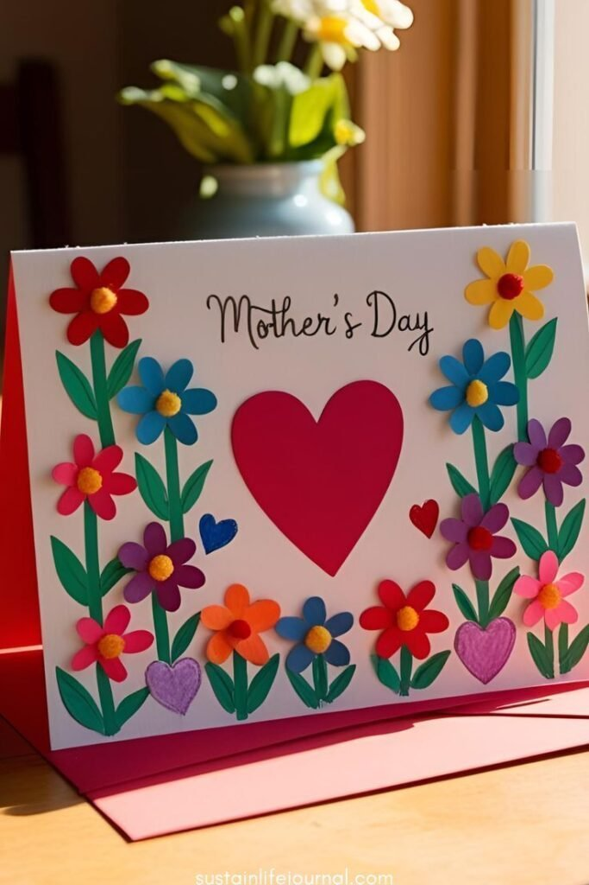
12. Mother's Day Bracelet Craft
Jewelry tends to feel special no matter how simple it is, and a bracelet made from beads and elastic string is an easy entry point.
Letter beads, a favorite color, or a small charm all work well for personalizing it, and younger kids who need help stringing the beads make the process even more of a shared activity.
A slightly uneven bracelet is part of the charm here, it reads as handmade, not as an attempt at something store-bought.
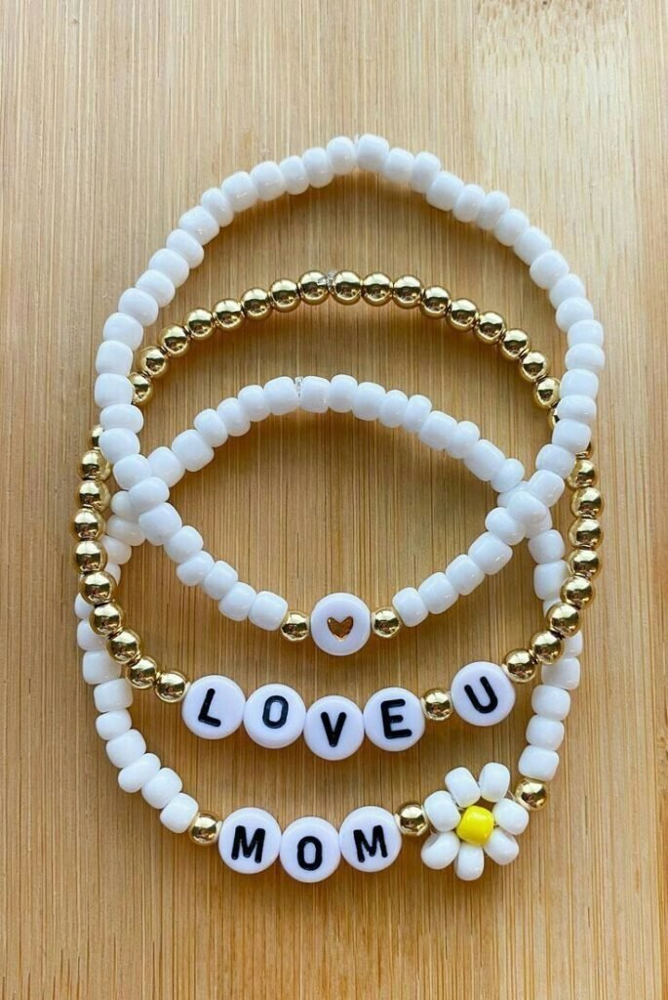
13. Painted Rock Keepsakes
A handful of smooth rocks, collected outside and given a quick wash, become a nearly free craft with real staying power.
Painting flowers, hearts, or a short phrase like "Best Mom Ever" on top, then sealing with a clear varnish, keeps the paint from chipping or fading too quickly.
They look genuinely charming scattered in a garden or sitting on a desk, and the entire craft costs close to nothing to put together.
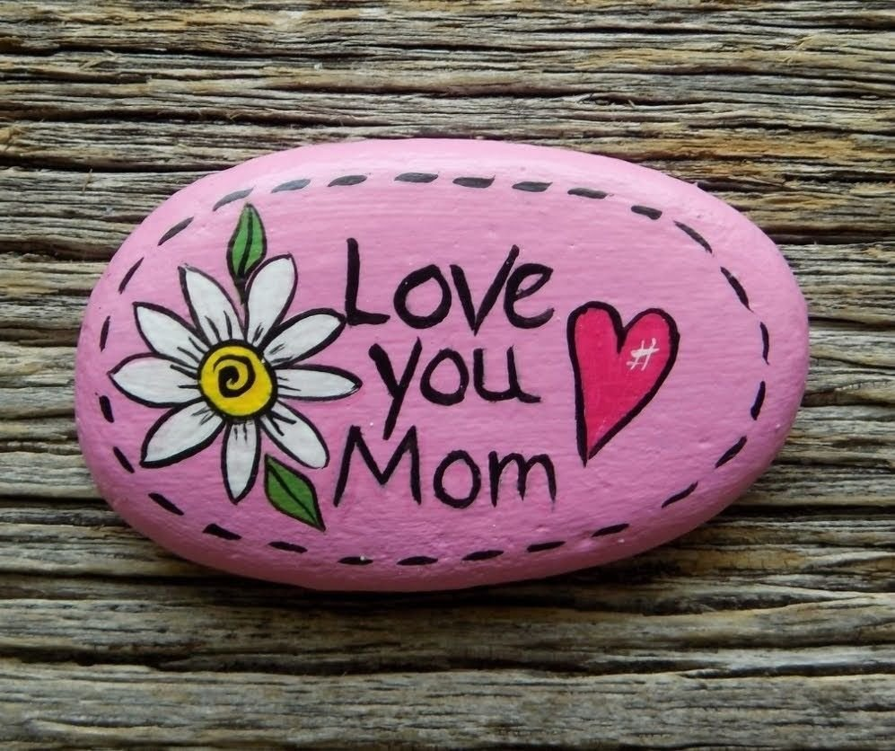
14. DIY Paper Flower Bouquet
For a bouquet that never wilts, paper flowers solve the problem of real ones being expensive or triggering allergies.
Cutting colorful paper petals and gluing them around a circle center, then adding a green paper stem, builds one flower at a time; bundling several together completes the bouquet.
It works beautifully for preschoolers through elementary-age kids, and the fact that the flowers never actually die is a genuine bonus over the real thing.
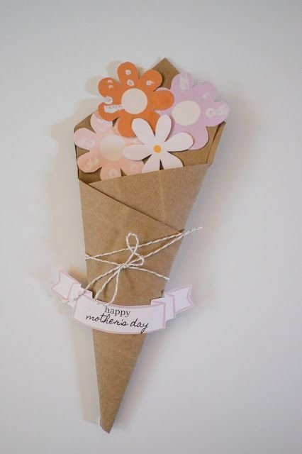
15. Decorated Apron for Mom
This one works whether or not Mom actually cooks often, a plain apron and a set of fabric markers are really all that's needed.
Kids can decorate with drawings, handprints, or a short message written near the hem, and older kids can take it a step further with their own design.
What makes it stick is how it turns something purely practical into something personal, every time it gets worn, the moment behind it comes back with it.
16. DIY Coupon Book for Mom
Kids tend to love the idea of coupons, and moms tend to love the idea of actual help, which makes this one a reliable favorite.
Small redeemable coupons, for a chore done without being asked, a quiet morning, a hug on demand, stapled together into a little booklet works especially well for elementary-age kids and teens who can design and write them out themselves.
The coupons don't need to be elaborate to land well; the honesty of what a kid chooses to offer is usually the charming part.
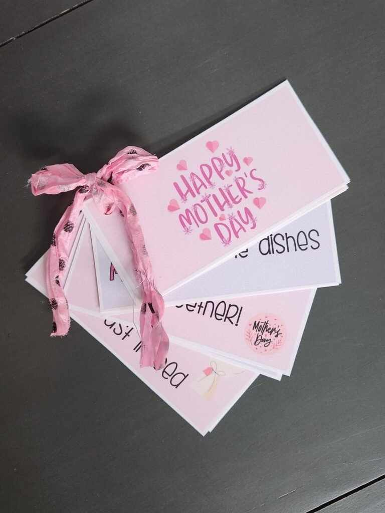
17. Handprint Flower Bouquet
Handprints rarely go out of style as a kids' craft, and this version turns them into a lasting bouquet rather than a one-off page.
Dipping a hand in washable paint, stamping it onto paper in a bright color, then cutting out the print and gluing it to a green paper stem builds one flower at a time.
A short message written alongside the bouquet finishes it off, and the whole craft suits toddlers and preschoolers especially well, it also frames beautifully as an instant keepsake.
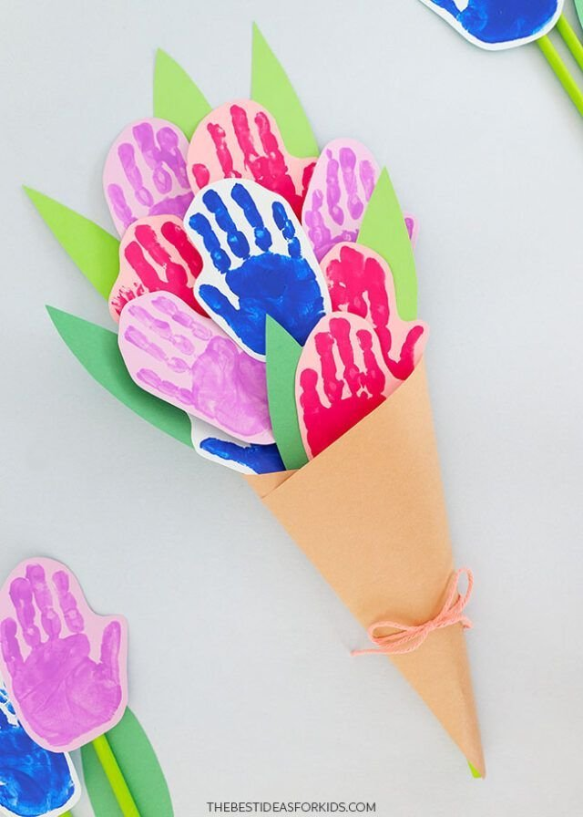
18. DIY Photo Frame Craft
A plain wooden frame, or one built from cardboard, becomes a genuinely personal gift once it's decorated and filled with a favorite photo.
Buttons, paint, stickers, or pressed flowers all work well as embellishments, depending on what's already on hand.
What makes this one stand out is how often it actually gets seen afterward, a framed photo on a dresser or shelf becomes part of the everyday view rather than something tucked away.
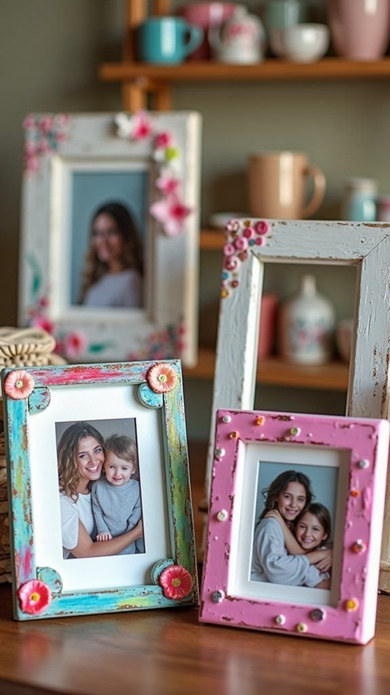
19. Mason Jar Love Notes
A plain mason jar turns into a lasting gift once it's filled with small folded notes, each one explaining a different reason a child loves their mom.
Tying a ribbon around the lid and labeling it something like "52 Reasons I Love You" turns the jar into something that can be opened one note at a time, long after the day itself has passed.
It's a craft that keeps giving well beyond Mother's Day, since there's no reason the notes all have to be read at once.
20. Thumbprint Heart Canvas
A small canvas and a bit of red or pink paint go a long way for this one, pressing thumbs onto the canvas in a cluster builds a simple heart shape with almost no setup required.
Adding a short phrase underneath finishes the piece, and it suits toddlers and preschoolers especially well, since the whole craft comes down to one repeated motion rather than any fine detail.
Framed or simply hung as-is, it holds up as a genuine keepsake well past the day itself.
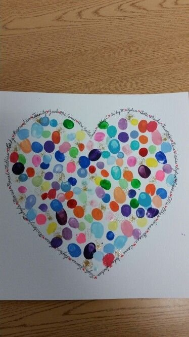
Choosing an Age-Appropriate Craft
A toddler or preschooler does best with crafts built around one simple, repeatable motion, a handprint, a thumbprint, a few stickers. Elementary-age kids can handle more steps and a bit of writing, while teens can take on something that actually requires planning, like a mixed scrub or a short edited video.
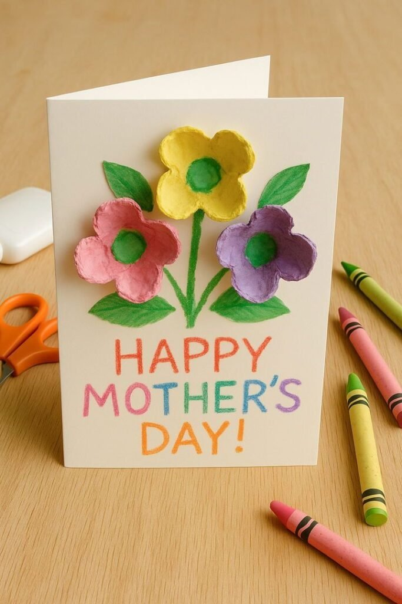
Final Thoughts
None of these twenty crafts require a trip to a specialty store or a big budget to feel meaningful. Most come together with supplies already on hand, and the time spent making them tends to matter just as much as the finished piece itself.
Whatever ends up getting chosen, the common thread running through all of them is the same: a little effort, made genuinely visible, is usually the whole gift.